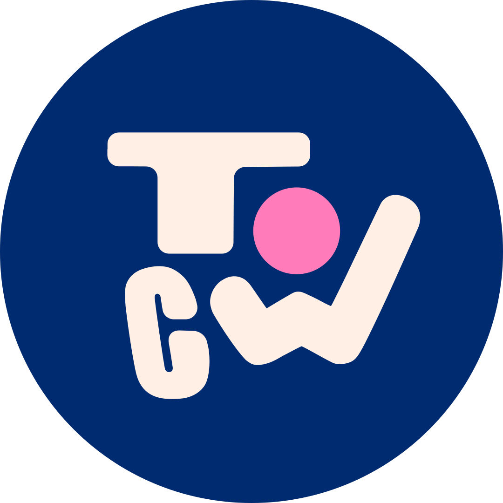

01Goals
A build order tied to this year's goals.
A working session with leadership starts from what the organization is trying to achieve this year and works back to where AI would move it. The session ends with an agreed order for what gets built.
I work with high-impact organizations to educate, strategize, plan and execute their AI journey.
Past wins
“We know we have to implement AI, and have no idea how.”Start with an AI strategy session
“We want to upskill our workforce to use AI as a starting point, and need somebody to do that.”Start with team training
“We have specific problem areas or processes we would like to look at automating or improving with AI.”Start with building
“We are looking for somebody to help build AI agents.”Start with building
Six parts. Where we begin depends on where you are.
01Goals
A working session with leadership starts from what the organization is trying to achieve this year and works back to where AI would move it. The session ends with an agreed order for what gets built.
02Map
Each team answers a short AI-led chat interview, with follow-up questions that adapt to what they say. Together with a review of the documents you already have, it shows how the work really moves, so everyone can see where it gets stuck and agree on what to change first.
03Train
Sessions are built around each team's real tasks, including reviewing AI's answers and spotting what is wrong with them, so people leave knowing where AI helps in their job and where it should be left alone. Each session goes through the tools at your disposal, with optional hands-on training, all within your organization's policy.
04Data
Reconciling your data is the foundation that any agentic work is built on top of. Competing spreadsheets and half-used systems become one source, with a view for each team that shows only what it needs.
05Build
Not every problem needs the same kind of build, so the problem decides the form. Nothing goes out until someone on your team approves it, and I build inside the tools you already have wherever that is possible.
06Keep improving
I stay on for support and take on the next project as priorities change. Your team is trained to run what gets built, so it keeps working whether I am in the room or not.
Start wherever makes sense for you. Each one can feed into the others.
Deep discussions with your leadership to understand your goals and priorities, plan how and where AI can fit, and build out a roadmap.
Help your team put AI to work. Uplevel your organization's understanding of AI and how it can deliver impact in different departments.
Have a problem in mind? Start with the problem, and build the right AI-driven product or workflow.
Support and new projects as your work evolves.
Not sure which one fits? Book a call and we will work it out together.
Book a 30-minute callEverything your team needs to put AI to work across the organization.
Every team is interviewed in parallel, with follow-up questions that adapt to each answer. You see how the work really moves without weeks of meetings.
Agents that pick up recurring work by themselves, such as a signed deal creating the contract, the invoice and each team's tasks. Every run is logged, and nothing goes out until someone on your team approves it.
One engine for several go-to-market channels, each with a written playbook, a spend cap and an approval step at set checkpoints. I run this one for my own business.
Answers for staff or customers, drawn from your own material. Each answer shows where it came from.
Records and documents are gathered, cleaned and reconciled, with someone on your team checking the merges. Every process ends up on one page with its written procedure.
A view for each team that shows only what it needs. Reports are built straight from your own data.

Case studyToronto Climate Week is a volunteer-run organization of about 70 volunteers. I standardized how the volunteers work and automated the workflows between them. Its sponsors get a better experience, and the team gets its weeks back.
Read the case study“Weekback Partners never assumed what the solutions should be. They came with a complete open mind, and first mapped out how we worked and why, then what our strategic goals were as an organization, and only then created solutions. They built for our strategy, budget and capabilities.”
From startups and established enterprises to professional services firms and non-profits. What they share is a team that is stretched and work that has outgrown the way it gets done.
No. Bring a task that takes too long, a recurring frustration or an idea, and we work out together whether strategy, training or a build is the right fit.
You work with me directly, from the first call through to the build.
I try to keep to the tools you already have and the ecosystems you are part of. If something more is needed, we decide together whether to build it or buy it.
Your data stays in your systems. In practice:
For a build, the aim is something your team is using within the first month. A strategy session or team training can be scheduled sooner.
It depends on where you start. The strategy session and team training are fixed price, a build is priced once it is scoped, and ongoing support is monthly. Book a call and we will scope it around what you need.
Have a question that is not here? Book a 30-minute call
Pick a time, tell me what's slowing things down, and we can talk about what a partnership could look like.
I've spent my career building at the leading edge of technology, figuring out how innovation can drive real impact for businesses. After co-founding three startups and helping drive operational improvements across leading organizations, I now help organizations work out what AI actually means for the way they operate and grow.
My approach combines deep technology acumen with hands-on experience running and operating high-performing organizations. I know what AI can do, where human judgment is still needed, and how to make it land and deliver real impact inside real, complicated organizations.
I believe AI can have a real, meaningful impact on organizations of any scale, but it needs to be done with the right strategy and business goals in mind.
Jeong